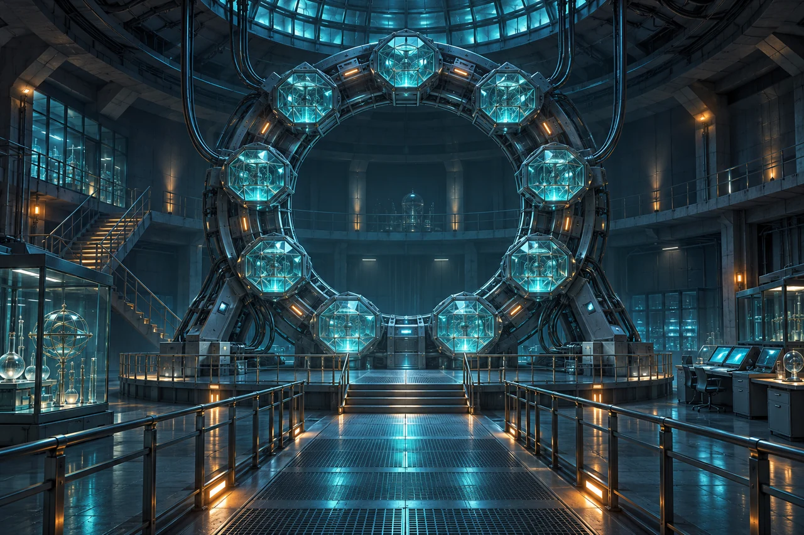

九つの専門。あなたの視点。
機械、信号、空間、数理。得意な調査を選ぶか、足りない手掛かりを追うか。

AN INTERACTIVE MYSTERY
未来を観測することと
未来を決めることは同じなのか。
17年前に封鎖された研究施設。失踪した研究員。
そして再起動した統合観測試作機《ASTERION》。
あなたの専門知識が、最後の選択を変える。
機械、信号、空間、数理。得意な調査を選ぶか、足りない手掛かりを追うか。
慎重に進む。危険を承知で急ぐ。休んで立て直す。状態を見ながら調査を組み立てよう。
選択とD20の結果が結末につながる。時間は行動ごとに進むので、物語はゆっくり読めます。
OBSERVATION ARCHIVE
0 / 5
CHOOSE YOUR PERSPECTIVE
物語は九学科共通です。専門が合う調査は判定に有利になり、各章で一度だけ専門能力を重ねられます。
NEXT MOVE
OBSERVATION RESULT
THE LAST OBSERVATION